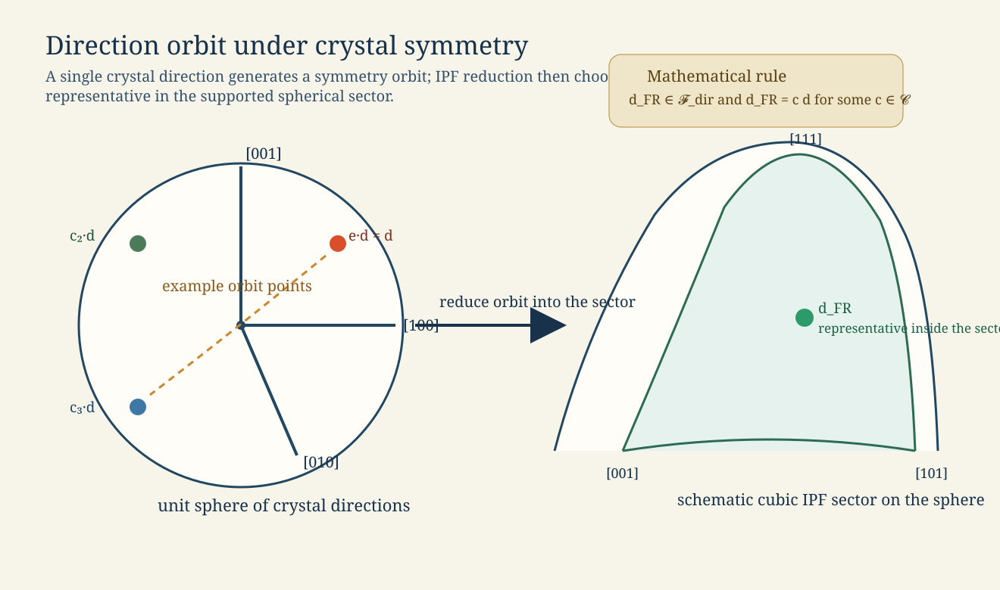
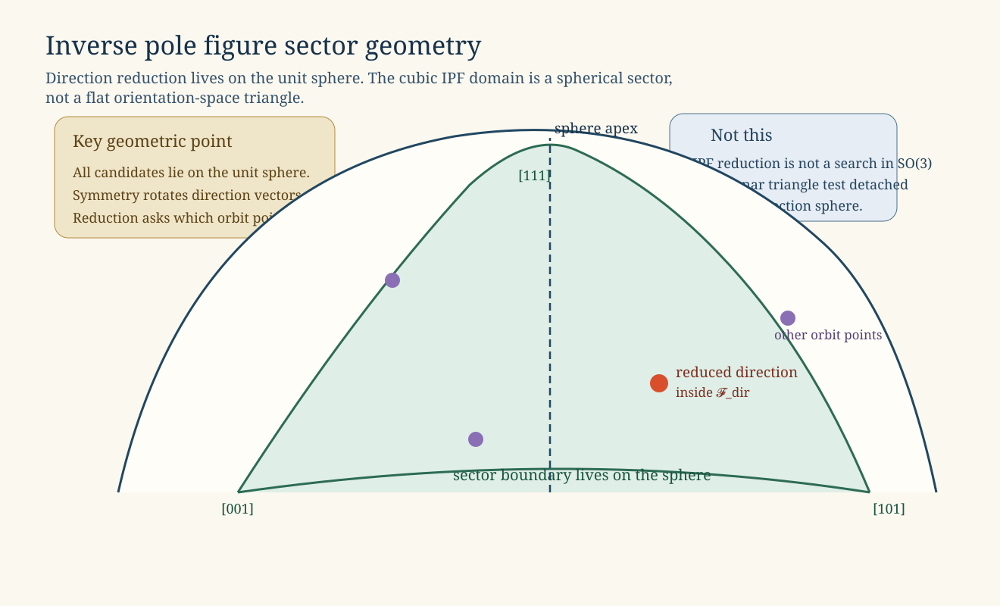
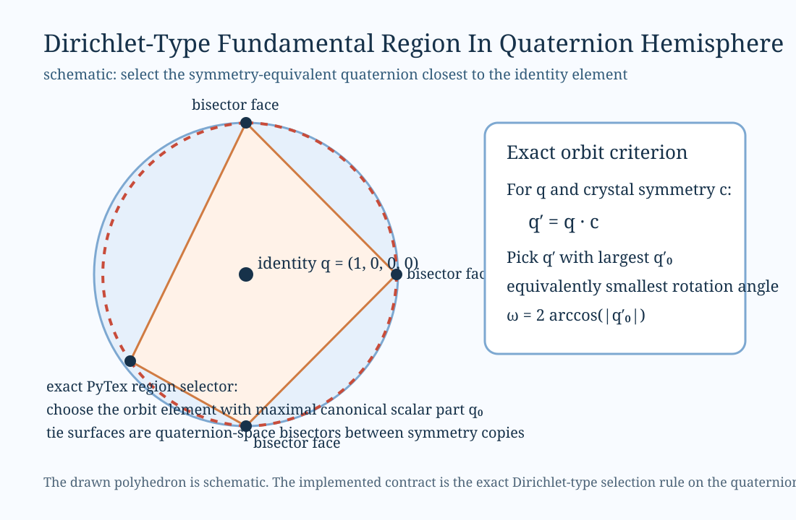
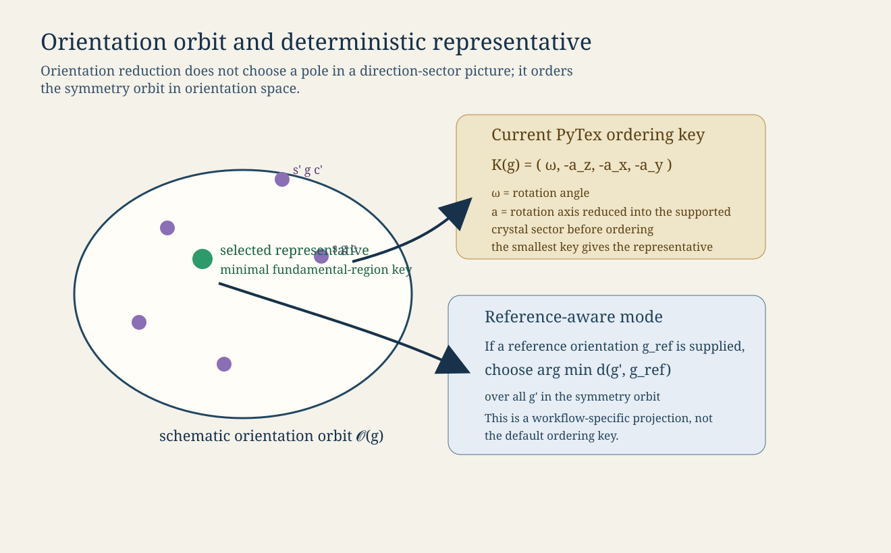
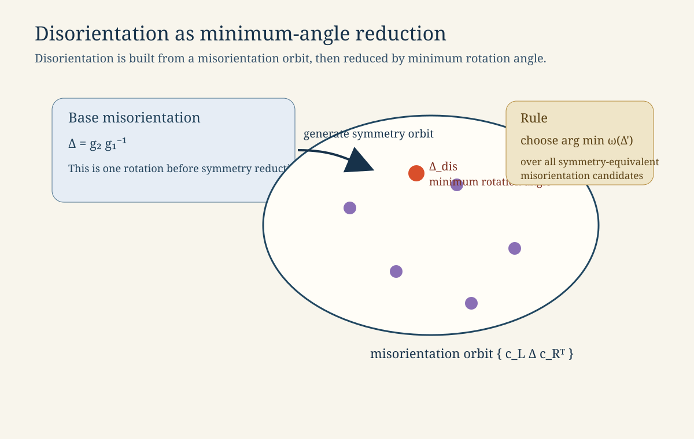

Symmetry Reduction And Fundamental Regions¶
This page explains one of the most important scientific contracts in PyTex: how symmetry acts on different geometric objects, and how those objects are reduced into a single representative.
This is foundational because the same idea appears in multiple places:
inverse pole figures
orientation canonicalization
misorientation and disorientation
EBSD neighborhood metrics
diffraction family grouping
If this reduction is vague, the rest of the library becomes vague with it.
One Phrase, Three Different Problems¶
People often say “reduce by symmetry” as if there were only one mathematical operation. In practice, PyTex has to distinguish at least three different reduction problems:
reduce a crystal direction into an inverse-pole-figure sector
reduce an orientation into one symmetry-equivalent representative
reduce a misorientation into a disorientation
These are related, but they do not live in the same geometric space and they are not reduced by the same rule.
The Basic Objects¶
Let
[ g : \text{crystal} \rightarrow \text{specimen} ]
denote an orientation. In PyTex, Orientation stores this mapping explicitly through a rotation together with crystal and specimen frames.
Let
[ \mathbf{d}_c \in S^2 ]
be a unit crystal direction. Under the orientation, it maps into specimen space as
[ \mathbf{d}_s = g \mathbf{d}_c. ]
Let
[ \mathcal{C} = {c_1, c_2, \dots} ]
be the crystal symmetry group, and optionally
[ \mathcal{S} = {s_1, s_2, \dots} ]
be a specimen symmetry group.
Then symmetry-equivalent orientations are
[ g’ = s g c, \qquad s \in \mathcal{S}, ; c \in \mathcal{C}. ]
Symmetry-equivalent directions are
[ \mathbf{d}’_c = c \mathbf{d}_c, \qquad c \in \mathcal{C}. ]
That difference matters: directions are acted on directly in direction space, while orientations are acted on through left and right multiplication in orientation space.

Direction Reduction: IPF Sectors¶
Inverse pole figure reduction is a direction-space problem.
Given one crystal direction (\mathbf{d}_c), PyTex:
generates its symmetry orbit ({c \mathbf{d}_c})
optionally applies antipodal identification when the workflow treats (\mathbf{d}) and (-\mathbf{d}) as equivalent
selects the representative that lies in the supported fundamental sector for the crystal class
This produces a unique representative direction
[ \mathbf{d}{\mathrm{FR}} \in \mathcal{F}{\mathrm{dir}}. ]
For cubic symmetry, this sector is often drawn as the triangle bounded by ([001]), ([101]), and ([111]). For other supported classes, the wedge geometry changes, but the reduction logic is the same: the representative must lie inside the declared sector.
What PyTex Means By “In Sector”¶
PyTex does not treat the sector as a vague picture. Each supported point group has:
explicit sector vertices
explicit inequalities or wedge tests
deterministic tie-breaking when a direction lies on a symmetry boundary
That is why the direction reduction can be used safely for IPF construction and IPF color keys.

Orientation Reduction: Symmetry Orbits In Orientation Space¶
Orientation reduction is not a direction-space problem. The object being reduced is the orientation (g) itself.
The orbit is
[ \mathcal{O}(g) = {s g c ; | ; s \in \mathcal{S},; c \in \mathcal{C}}. ]
The question is not “which pole lies in the triangle?” but rather:
[ \text{which element of } \mathcal{O}(g) \text{ should be the stable representative?} ]
PyTex now answers that in two different modes.
Mode 1: Exact Orbit Reduction To The Dirichlet-Type Region¶
When no explicit reference orientation is supplied, PyTex reduces the full symmetry orbit exactly in the unit-quaternion hemisphere.
Let the orientation be represented by a unit quaternion (q), with the sign convention fixed to the upper hemisphere:
[ q \sim -q, \qquad q_0 \ge 0. ]
For crystal symmetry (\mathcal{C}), PyTex forms the right-action orbit
[ \mathcal{O}(q) = { q \cdot c ; | ; c \in \mathcal{C} }, ]
canonicalizes each representative back into the upper hemisphere, and then selects the representative with maximal scalar part (q_0). Because
[ \omega = 2 \arccos(q_0) ]
on that hemisphere, this is exactly the same as choosing the symmetry-equivalent representative with minimum rotation angle to the identity.
The tie surfaces are the bisectors where two orbit representatives have the same scalar part. In that sense, the implemented PyTex orientation region is a Dirichlet-type fundamental region in quaternion space, and therefore an exact symmetry-orbit reduction rule for the supported proper point groups already present in SymmetrySpec.
PyTex still applies a deterministic lexicographic tie-break after the exact minimum-angle criterion so boundary cases remain reproducible in floating-point arithmetic.

Mode 2: Reference-Aware Projection¶
When a workflow supplies a reference orientation (g_{\mathrm{ref}}), PyTex instead chooses the symmetry-equivalent representative minimizing the unsymmetrized orientation distance to that reference:
[ g_{\mathrm{proj}}¶
\arg\min_{g’ \in \mathcal{O}(g)} d(g’, g_{\mathrm{ref}}). ]
This is useful for workflows where “closest to the reference” is scientifically more meaningful than “first by deterministic ordering”.

Misorientation And Disorientation¶
Given two orientations (g_1) and (g_2), the base misorientation is
[ \Delta = g_2 g_1^{-1}. ]
Under symmetry, PyTex considers the orbit
[ \Delta’ = c_L , \Delta , c_R^{T}, \qquad c_L \in \mathcal{C}_L,; c_R \in \mathcal{C}_R. ]
The disorientation is then the representative with minimum rotation angle:
[ \Delta_{\mathrm{dis}}¶
\arg\min_{\Delta’} \omega(\Delta’). ]
This is the quantity used in symmetry-aware misorientation distance, EBSD KAM, GROD, and grain-boundary misorientation.
The key point is that disorientation is a minimum-angle reduction of a misorientation orbit, not the same thing as IPF-sector reduction and not the same thing as orientation canonicalization.

What Is Exact, And What Is Still Approximate¶
PyTex is already explicit and deterministic here, but the current implementation boundary should be stated carefully.
Implemented¶
explicit symmetry orbits for directions, orientations, and misorientations
class-specific direction-space sector reduction for supported point groups
exact minimum-angle orientation-space representative selection through a Dirichlet-type orbit rule in quaternion space
deterministic tie-breaking and explicit
project_to_exact_fundamental_region()/is_in_fundamental_region()APIsminimum-angle disorientation under crystal symmetry
Still Ahead¶
proof-level boundary catalogs for each crystal class written as closed-form inequality sets
broader external-baseline parity at the level of exact class-specific boundary fixtures
richer region visualizations and class-by-class boundary tables in the public docs
So the current PyTex behavior is no longer only a heuristic canonicalization. It is an exact orbit-reduction rule for the supported symmetry classes, with the remaining gap being boundary catalogs and external parity at the class-by-class polyhedral-description level.
How This Connects To The Code¶
SymmetrySpec.reduce_vector_to_fundamental_sector()handles direction reductionOrientation.project_to_exact_fundamental_region()handles exact symmetry-orbit reduction in orientation spaceOrientation.project_to_fundamental_region()remains as the stable convenience aliasOrientation.fundamental_region_key()exposes the deterministic ordering surfaceMisorientation.disorientation()handles minimum-angle misorientation reduction
Those APIs are separated on purpose because they solve different mathematical problems.